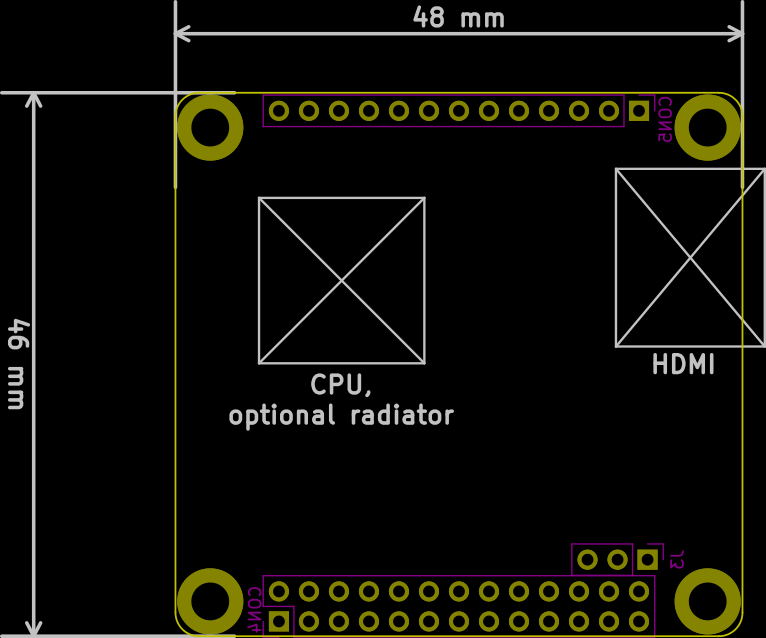

This project template is the basis of an expansion board (a.k.a. "hat") for the Orange Pi Zero Plus2 single-board computer.
This base project includes a PCB edge defined as the same size as the Orange Pi Zero Plus2 PCB (according to its original mechanical drawing) with the connectors placed correctly to align the two boards. All IO present on the Orange Pi Zero Plus2 board is connected to the project through the 0.1" expansion headers (female sockets are on the hat).
The board outline looks like the following:

(c)2018 Alexey Chernov